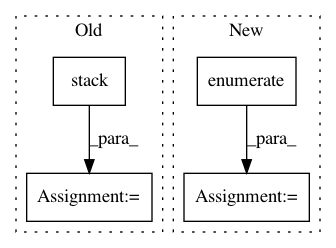

b9e27136a5e80850df7859b8f3ca23d396f1b009,snorkel/learning/pytorch/rnn/lstm.py,LSTM,forward,#LSTM#Any#Any#,22
Before Change
outs = []
for i in range(X.size(0)):
outs.append(output[i, seq_lengths[i] - 1,:])
output = torch.stack(outs, dim=0)
return self.output_layer(self.dropout_layer(output))
def initalize_hidden_state(self, batch_size):
return (
After Change
seq_lengths, perm_idx = seq_lengths.sort(0, descending=True)
X = X[perm_idx, :]
inv_perm_idx = torch.tensor([i for i, _ in sorted(enumerate(perm_idx), key=lambda idx: idx[1])], dtype=torch.long)
encoded_X = self.embedding(X)
encoded_X = pack_padded_sequence(encoded_X, seq_lengths, batch_first=True)
_, (ht, _) = self.lstm(encoded_X, hidden_state)
In pattern: SUPERPATTERN
Frequency: 3
Non-data size: 4
Instances
Project Name: snorkel-team/snorkel
Commit Name: b9e27136a5e80850df7859b8f3ca23d396f1b009
Time: 2018-05-04
Author: stephenhbach@gmail.com
File Name: snorkel/learning/pytorch/rnn/lstm.py
Class Name: LSTM
Method Name: forward
Project Name: dask/dask-image
Commit Name: cbbcea8795e8da754a5b3ffb1a08ef66afd84eef
Time: 2018-09-02
Author: jakirkham@gmail.com
File Name: dask_image/ndmeasure/_utils.py
Class Name:
Method Name: _ravel_shape_indices
Project Name: stanfordnlp/stanza
Commit Name: c020f2da7c5b969cf7dd16a9be7aa100651f8d79
Time: 2020-06-15
Author: horatio@gmail.com
File Name: stanza/models/classifiers/cnn_classifier.py
Class Name: CNNClassifier
Method Name: forward